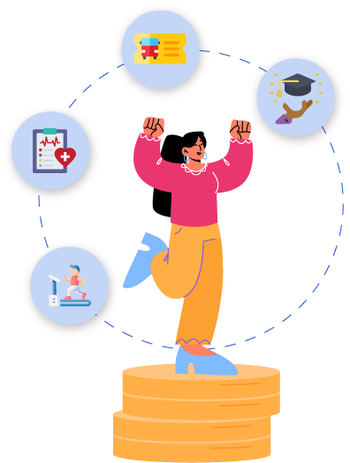

Benefícios opcionais: política da organização e benefícios mais comuns
Os benefícios opcionais são oferecidos pelas empresas com o intuito de atrair e de reter talentos,
bem como de melhorar o ambiente de trabalho e a satisfação do público interno. As organizações
definem sua própria política de benefícios, considerando suas estratégias, seu orçamento e sua
cultura organizacional.
Esses benefícios são aqueles que a organização proporciona de forma espontânea, permitindo aos
colaboradores escolherem os que melhor atendem às suas necessidades. O programa de benefícios deve
identificar e acompanhar as expectativas dos colaboradores, que podem mudar com o tempo, garantindo
que os benefícios estejam alinhados a essas mudanças.
A seguir, serão destacados os benefícios opcionais mais comuns que são disponibilizados pelas
organizações.
Clique ou toque para visualizar o conteúdo.
Vale-alimentação ou refeição
Nos termos da legislação vigente, a entrega deste benefício não é obrigatória.
Porém, em instituições vinculadas a sindicatos, por exemplo, o benefício pode
ser compulsório. Além disso, as organizações que participam do Programa de
Alimentação do Trabalhador (PAT) recebem incentivos fiscais para o fornecimento
desse benefício para seus empregados.
Sendo assim, a lei do vale-alimentação ou refeição varia conforme o tipo de
contrato de trabalho ou os casos que envolvem o sindicato. Por isso, é
importante conhecer a diferença entre vale-alimentação e vale-refeição.
O vale-alimentação serve para fazer compras em mercados e padarias.
O vale-refeição permite ao trabalhador alimentar-se em restaurantes e
locais que tenham serviços de alimentação.
Se a empresa optar por oferecer aos colaboradores o vale-refeição, é importante
disponibilizar um valor adequado ao custo de alimentação da região. Caso a
organização esteja situada em um bairro nobre, o ideal é estipular um valor
mínimo para que o colaborador consiga almoçar todos os dias.
Assistência médica
Quando a empresa fornecer plano de saúde, uma parte do valor pode ser descontada
do salário do colaborador. No entanto, esse desconto é geralmente menor, se
comparado a um plano particular, já que a empresa subsidia boa parte do custo.
Além disso, os planos empresariais costumam ser mais baratos do que os
individuais.
A empresa pode oferecer diversas opções de planos, com coberturas mais amplas ou
não. Dessa forma, o colaborador poderá escolher o plano que melhor se encaixe em
suas necessidades, considerando os descontos no salário. Em alguns casos, a
empresa pode arcar com o custo total do plano, evitando descontos no salário do
colaborador.
Plano odontológico
O plano odontológico tem sido visto pelas empresas como um benefício importante,
pois ele não só ajuda a reter talentos, mas também diminui o absenteísmo e
promove o bem-estar dos funcionários e de seus familiares.
Esse benefício funciona de forma semelhante à assistência médica, proporcionando
ao colaborador a possibilidade de realizar tratamentos dentários.
Bolsa de estudo
Muitas empresas investem na formação de seus colaboradores e oferecem bolsas de
estudos totais ou parciais para cursos, graduações e especializações.
Proporcionar uma formação aos colaboradores é interessante, principalmente para
que possam contribuir efetivamente para o crescimento dos negócios. Contudo,
para que esse movimento ocorra, a bolsa de estudo deve ser para cursos de áreas
de interesse da organização.
Auxílio-creche
De acordo com a lei, empresas que têm mais de 30 empregadas com mais de 16 anos
devem ter um espaço adequado para que as colaboradoras possam deixar seus filhos
em período de amamentação ou conceder o auxílio-creche.
Embora a legislação se aplique diretamente às mães, a política de benefícios de
muitas empresas estende o auxílio-creche a pais, casais homoafetivos e
colaboradores com guarda de filhos, explicitando o direito também aos homens.
O auxílio-creche costuma ser fornecido enquanto a criança estiver em idade de
creche, geralmente até os 6 anos, mas isso varia de acordo com a política
interna da empresa ou com as convenções coletivas de trabalho. A empresa pode
disponibilizar um local, dentro ou fora de sua estrutura, para os colaboradores
deixarem seus filhos durante o horário de expediente ou conceder o
auxílio-creche. O auxílio deve ser pago mensalmente, junto com o salário ou por
meio de reembolso das despesas com creche, conforme acordado entre a instituição
e o colaborador.
Vale-cultura
É um benefício normalmente oferecido por empresas de grande porte, caracterizado
por sua natureza cumulativa e ausência de prazo de validade. Pode ser utilizado
em todo o território nacional para a compra de produtos ou de serviços
culturais, como livros, ingressos para shows, cinema, teatro etc.
Previdência privada
São planos baseados em contribuições mensais ou periódicas realizadas durante
vários anos e constituem um montante acumulado em nome do participante. Esse
capital acumulado, atualizado pela inflação e remunerado com juros, será
utilizado para pagar os benefícios futuros do colaborador, que receberá um
pagamento mensal a título de pensão.
Todo plano de previdência envolve duas fases: na primeira, o plano recebe as
contribuições do participante (empresa) para formar as reservas de capital; na
segunda, o plano paga o benefício mensal ao funcionário na forma de
complementação da sua aposentadoria.
A previdência privada, portanto, garante uma complementação na renda no
momento da aposentadoria.
PLR
A participação nos lucros e resultados (PLR) é um benefício utilizado
principalmente para atrair e reter talentos e já está regulamentado por lei. Não
é obrigatório, exceto se estiver previsto em acordo ou convenção coletiva da
categoria.
Na maioria das vezes, é pago em moeda real, mas as ações da empresa também podem
ser utilizadas como forma de pagamento.
A PLR é uma forma de estimular os colaboradores para atingir os objetivos
organizacionais.
Você sabia?
Há diversos outros benefícios que podem ser oferecidos pelas organizações, como home
office,
convênio com academias, salões de beleza, psicólogos etc. É muito importante que a empresa
identifique as necessidades e as expectativas do seu público interno para ampliar sua gama
de
benefícios e satisfazer seus colaboradores.
O que mudou com relação aos benefícios opcionais com a nova reforma trabalhista
A reforma trabalhista alterou alguns artigos da Consolidação das Leis do Trabalho (CLT), entre eles
os artigos 457 e 458, que tratam da remuneração do trabalhador, ou seja, tudo o que constitui seu
salário.
A seguir, serão destacados os benefícios opcionais que sofreram alteração com a nova reforma
trabalhista.
Clique ou toque para visualizar o conteúdo.
Prêmios
Antes da reforma, se uma empresa concedia um prêmio ao seu funcionário, corria o
risco de o valor ser considerado parte do salário e também de ter que pagar encargos
sobre esse valor. Com a reforma, o empregador poderá premiar o funcionário sem que
esse valor seja considerado como parte do salário. Ou seja, os prêmios não
integrarão a remuneração e também não poderão ser base para a incidência de encargos
previdenciários e trabalhistas.
Benefícios de saúde
A reforma trabalhista deixou o empregador mais protegido quanto à concessão de
benefícios aos empregados, pois alguns desses benefícios eram alvos de processos
trabalhistas. Nos planos de saúde médicos e odontológicos, por exemplo, a Lei nº
8.212, de 1991, determinava que o valor referente à assistência médica não integrava
o salário de contribuição, desde que a cobertura fosse para todos os empregados e
dirigentes da empresa. No entanto, o Fisco considerava que, quando fossem concedidos
planos superiores para determinados empregados, parte desse benefício perderia o
caráter assistencial, passando a ser remuneratório. Dessa forma, essa parte
integraria o salário de contribuição, incidindo a contribuição ao Instituto Nacional
do Seguro Social (INSS) sobre a diferença em relação ao plano oferecido aos demais
empregados.
Com a reforma, essa situação mudou, pois houve a inclusão do parágrafo 5º ao artigo
458 da CLT, que destaca que os valores relacionados à assistência médica ou
odontológica, mesmo com valores e coberturas diferentes entre os empregados, não
integram o salário de contribuição.
Portanto, as discussões acerca da concessão de planos diferenciados acabaram, pois
não há mais incidência das contribuições sociais previdenciárias sobre esses
benefícios.
Contribuições não salariais
No parágrafo 2º do artigo 458 da CLT, estão destacados os benefícios concedidos pelo
empregador e que não são considerados como salário, por exemplo: educação,
assistência médica e odontológica, seguros de vida, previdência privada,
vale-cultura, entre outros. A reforma trabalhista também alterou o parágrafo 1º do
artigo 457. Nele, as gratificações ajustadas foram excluídas do texto legal (aquelas
pagas habitualmente, de forma contínua), contemplando apenas as gratificações
legais.
Subsídios de viagem
Na alteração da reforma, o parágrafo 2º do artigo 457 da CLT incluiu as diárias de
viagens como indenizatórias, já que visam ressarcir o empregado das despesas das
viagens realizadas a trabalho. Esse parágrafo destaca que ajudas de custo,
auxílio-alimentação, diárias para viagem, prêmios e abonos não integram a
remuneração do empregado e não são base de incidência de qualquer encargo
trabalhista e previdenciário.
Reforma salarial
Resumindo, com a reforma, o salário do funcionário não inclui prêmios, abonos,
alimentação concedida em dinheiro etc. O empregador poderá pagar um abono para os
funcionários, mas que não integrará a remuneração para efeito de recolhimento de
FGTS (Fundo de Garantia do Tempo de Serviço), cálculo de férias, 13º salário e
previdência.
Agora que você já compreendeu os benefícios opcionais, que tal colocar esse
conhecimento em prática?
Leia atentamente os seguintes casos. Depois, clique e arraste a resposta correta para os prós e
contras referentes aos benefícios opcionais.
PRÓS
CONTRAS
O colaborador pode optar pelo pacote que melhor atenda às suas necessidades
pessoais.
O benefício pode auxiliar a organização a se adaptar às necessidades de mudança
da força de trabalho que também está em constante transformação.
Os custos e a carga administrativa aumentam.
Com o benefício, pode ocorrer um maior envolvimento dos colaboradores e de suas
famílias, facilitando a compreensão dos benefícios.
O colaborador pode fazer escolhas inadequadas e sentir-se prejudicado em
emergências previsíveis.
Novos benefícios podem ser introduzidos a um custo menor, ampliando as opções de
escolha.
Para otimizar o investimento organizacional em benefícios, os custos são
limitados, oferecendo ao colaborador opções dentro dessa limitação.
O colaborador escolhe somente os benefícios que utiliza, mas o uso elevado de um
benefício pode aumentar o seu custo.
Resposta correta
Muito bem! Sua resposta está correta.
Resposta
incorreta
Oops! Que tal revisar sua resposta? Ela ainda não está correta.
Finalidade da oferta de benefícios opcionais
É comum o gestor, ao analisar a oferta de benefícios, associá-los à elevação de custos com a folha de
pagamento, mas é preciso avaliar essa questão menos pelo lado financeiro e mais pelo lado pessoal e
motivacional.
Oferecer benefícios ajuda a melhorar a qualidade de vida do trabalhador, o que
influencia diretamente na sua motivação. Assim, funcionários motivados produzem mais
e melhor, já que têm como foco buscar bons resultados para a organização.
Os benefícios opcionais são uma maneira de reter talentos porque, sem dúvida, eles
os avaliarão com mais critério antes de trocar de emprego. Além disso, é também uma
forma de atrair e de selecionar os melhores profissionais, visto que eles são os
mais disputados no mundo do trabalho e levam em conta os benefícios no momento de
escolha do emprego.
Dessa forma, a empresa precisa verificar quais benefícios opcionais são possíveis
dentro do seu orçamento, ao mesmo tempo que procura facilitar o cotidiano do
colaborador. Para maior assertividade, é importante ouvir o funcionário e quais são
suas necessidades, pois, a partir dessas respostas, será possível definir os
benefícios que serão bons para todos.
Em resumo, embora a empresa tenha a obrigação legal de pagar alguns benefícios para os seus
colaboradores, outras opções também podem ser ofertadas. Estas serão igualmente úteis para manter o
colaborador motivado e principalmente alinhado aos objetivos e às expectativas da organização.
Encerramento

Os benefícios opcionais na área de recursos humanos desempenham um papel crucial na
valorização e na satisfação dos colaboradores. Ao oferecer opções que vão além do salário,
como planos de saúde diferenciados, auxílios à educação, horários flexíveis e programas de
bem-estar, as empresas não apenas atraem talentos, mas também fomentam um ambiente de
trabalho mais engajado e produtivo. Esses benefícios melhoram a retenção de funcionários e a
construção de uma cultura organizacional sólida, refletindo o comprometimento da empresa com
o bem-estar de sua equipe.